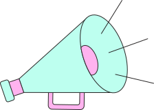
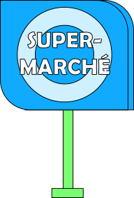
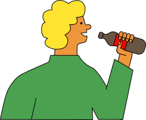
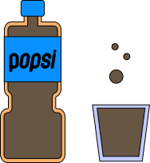

Pour cela, les entreprises peuvent suivre une démarche structurée et itérative, qui va de l’identification d’une opportunité jusqu’à la réalisation des solutions, puis à l’évaluation de leurs résultats.
Cette démarche mobilise différents métiers : conception, R&D, production, marketing, achats, environnement, mais aussi fournisseurs et utilisateurs.
Nous allons découvrir les principales étapes de cette démarche à travers un exemple concret : celui d’une entreprise fictive qui cherche à améliorer la performance environnementale de son Saclay Cola.

La démarche d’éco-conception se compose en général de 6 grandes étapes :
et cadrage
 B analyser
B analyser
 D sélectionner
D sélectionner
 E réaliser
E réaliser

F communiquer et capitaliser- avant projet
- projet
Identifier les opportunités d’éco-conception avant de lancer un projet.
Avant de chercher des solutions, il faut comprendre le contexte du projet et repérer les opportunités d’éco-conception. Une analyse à 360° permet notamment d’examiner trois dimensions :
L’entreprise : sa stratégie, ses objectifs, ses compétences et ses contraintes ;
La chaîne de valeur : les fournisseurs, la production, la distribution, les utilisateurs et la fin de vie du produit ;
Le contexte : les réglementations, les attentes du marché, les évolutions technologiques et les enjeux environnementaux.
Cette analyse aide à identifier les sujets sur lesquels il serait pertinent d’agir et à définir les priorités du projet.
source: Hélène Teulon, Le guide de l’éco-innovation, Eyrolles, 2014L’entreprise Boire Mieux souhaite proposer une nouvelle boisson éco-conçue : le Saclay Cola.
L’analyse 360° du cola permet de bien comprendre le contexte dans lequel se place l’entreprise : la concurrence, les attentes du client, les innovations technologiques du secteur, les exigences réglementaires…
 stratégie de l’entreprise
stratégie de l’entreprise
 marges de manœuvre
marges de manœuvre

distributeurs
clients
concurrents réglementations
réglementations
 veille technologique
veille technologique
- l’entreprise
- la chaîne de valeur
- le contexte